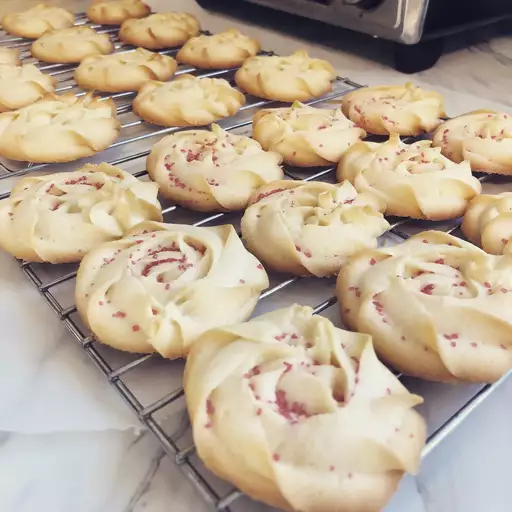

Shortbread Cookies

Description
This is the best shortbread recipe ever. These buttery cookies melt when you take a bite. Great for Christmas parties with a little bit of decorating.
Ingredients
These are the simple ingredients you'll need to make the best shortbread cookies of your life:
- Flour: ½ cups all-purpose flour
- Butter: 1 cup butter, softened
- Sugar: ½ cup confectioners' sugar
- Cornstarch: ¼ cup cornstarch
Steps
- Preheat the oven to 375 degrees F (190 degrees C).
- Beat butter in a large bowl with an electric mixer until light and fluffy. Add flour, confectioners' sugar, and cornstarch; beat on low for 1 minute, then high for 3 to 4 minutes. Drop spoonfuls of dough 2 inches apart onto ungreased cookie sheets.
- Bake in the preheated oven until edges are golden, 12 to 15 minutes. Cool on the baking sheets briefly before removing to a wire rack to cool completely.